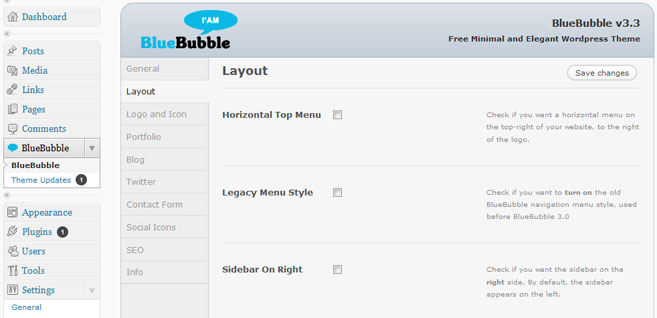

Created: January 11, 2011
By: imaginalgo
Support: BlueBubble Support
Thank you for your interest in BlueBubble for Wordpress. This theme takes advantage of many of the new features included with Wordpress 3.0, such as: MultiSite, Custom Headers and the new Menu System. All this while keeping the same basic layout from BlueBubble version 2.9.2. Easy to install, easy to deploy – we hope you enjoy this theme.
The following is a list of changes, fixes and additions new in version 3.4:
As of version 3.3, the BlueBubble theme will automatically notify you of any new updates. Simply go to the BlueBubble Options panel and select the new option Theme Updates from the menu.
Thank you for your interest in BlueBubble for Wordpress. This theme has been renumbered 3.0 to coincide with Wordpress 3.0. It takes advantage of many of the new features included with Wordpress 3.0, such as: MultiSite, Custom Headers and the new Menu System. These are all included "out of the box" meaning that you won't have to mess with adding fields to the functions.php file.
In addition, there are several new and exciting features included with this version, including: a new Custom Panel with many new options, 7 different color schemes, a Colorbox pop-up for portfolio options, ability to Tweet any post and an author profile box with all the author's posts listed.
All this while keeping the same basic layout from BlueBubble version 2.9.2. Easy to install, easy to deploy – we hope you enjoy this theme.
Sincerely,
Thomas Veit and Mike Walsh
First, make sure that you have Wordpress 3.0 or later installed. After installing Wordpress on your server, upload or copy the bluebubble folder to the wp-contents/themes directory. Once this is done…
The BlueBubble Options Panel has been redesigned in version 3.3. The same options are present, along with several new ones. Here is what you will see:
A couple of special categories:
This section is pretty simple. Remember when you created your main page and blog page categories in step 2.5? Well, if you did this, then they will appear in the two drop-down menus in this section. Here you connect the pages you created in steps 2.2 and 2.3 with the categories you created in step 2.5.
The check box is quite simple – if you don't want users to be able to leave comments on your portfolio pages, check the box. (Note: Even with the box checked, people can still post to your Blog section)
Beginning with BlueBubble 3.1, you can also turn on and off the lightbox feature for Portfolio items. When turned off, clicking on the image will take you to the detailed portfolio page – the same as clicking Details in the text below the photo.
You can also indicate from the BlueBubble Admin panel how many Portfolio items you would like to appear on each page. If you enter nothing, it will show 6 items per page and automatically create other page(s) if there are more than 6 items.
The BlueBubble contact form comes ready with Javascript validation and the option for the users to send themselves a copy of the email they send to you. Simply type in the email address at which you wish to receive email from the form, and save. If you do not enter an email address, all contact form emails will automatically be sent to the administrator's email account.
Under the Contact Form Email Address option is a series of spaces related to Social Media. If you would like to enter an icon link, for example, to your Twitter account, follow these two steps:
Currently supported Social Sites include: Facebook, Twitter, LinkedIn, Delicious, Digg, DeviantArt, MySpace, Evernote, Flickr, Netvibes, Orkut, Reddit, ShareThis, StumbleUpon, Technorati, and Tumblr.
In addition to the options mentioned earlier, there are some other options that, while not strictly necessary, can help you enjoy more your experience with the BlueBubble theme.
Custom Logo: To replace the BlueBubble logo with your own, simply upload an image from the Media option, copy the URL and paste it in the option field.
Custom Favicon: Same process as Custom Logo. Paste the URL in the second option field. Note: your Favicon should be in .ico format, although some browsers also allow .png
SEO Fields: Under Search Engine Optimization you can add a Meta Tag Description, Meta Keywords, or a Google Analytics tracking code. Simply follow the instructions provided under this option in the control panel.
Custom User Fields: BlueBubble has added a few fields to the User Profile defaults provided in Wordpress. Enjoy!
Shortcodes: There are two types of shortcodes as of BlueBubble 3.2 – text boxes and buttons. Shortcodes are short code brackets that you can add while publishing that add new features. As of version 3.4, the shortcodes have been added to the Wordpress Write Panel. So you can click on the button with a green or blue dot to automatically insert the shortcode for a blue or green button.
Author Profile Box: From the blog section, you can click on the name of the author to see a separate page with the author's user profile information as well as a list of all their posts.
Custom Author Photo: It is possible to use a Wordpress Plugin to allow users to upload a custom photo, but there is another way. Upload a photo to the wp-content/themes/BlueBubble/images/authors/ folder with the same name as your user ID and in .jpg format. (to see your User ID number, select Users -> Users from the admin page, and hover over the name of the user desired. In the URL that appears in the bottom of your browser you should see user_id=#. That number is the user ID. The administrator has user ID 1.) For example, the administrator would upload 1.jpg. The ideal size is 100x100.
If you have followed the steps above, adding an item to your portfolio is easy! Follow these steps:
If you are having trouble setting up a Portfolio or Blog, please read the other Help file which came with this theme.
More advanced users may want to change some specific items. A couple of items to note are:
/* Remove Wordpress Ver. Number from HTML - For Security Reasons */
function wpbeginner_remove_version() {
return '';
}
add_filter('the_generator', 'wpbeginner_remove_version');
//Check to make sure that the name field is not empty
if(trim($_POST['contactName']) === '') {
$nameError = 'You forgot to enter your name.';
$hasError = true;
} else {
$name = trim($_POST['contactName']);
}
//Check to make sure sure that a valid email address is submitted
if(trim($_POST['email']) === '') {
$emailError = 'You forgot to enter your email address.';
$hasError = true;
} else if (!eregi("^[A-Z0-9._%-]+@[A-Z0-9._%-]+\.[A-Z]{2,4}$", trim($_POST['email']))) {
$emailError = 'You entered an invalid email address.';
$hasError = true;
} else {
$email = trim($_POST['email']);
}
//Check to make sure comments were entered
if(trim($_POST['comments']) === '') {
$commentError = 'You forgot to enter your message.';
$hasError = true;
} else {
if(function_exists('stripslashes')) {
$comments = stripslashes(trim($_POST['comments']));
} else {
$comments = trim($_POST['comments']);
}
}
Next, go to the scripts folder and open contact-form.js, looking for and changing the following:
$('.requiredField').each(function() {
if(jQuery.trim($(this).val()) == '') {
var labelText = $(this).prev('label').text();
$(this).parent().append('You forgot to enter your '+labelText+'.');
hasError = true;
} else if($(this).hasClass('email')) {
var emailReg = /^([\w-\.]+@([\w-]+\.)+[\w-]{2,4})?$/;
if(!emailReg.test(jQuery.trim($(this).val()))) {
var labelText = $(this).prev('label').text();
$(this).parent().append('You entered an invalid '+labelText+'.');
$(this).addClass('inputError');
hasError = true;
}
}
});
When the contact form is successfully sent, users will see a default thank-you message. To change this, open the same contact-form.js file and look for the following at the end of the file: (again, changing the highlighted field)
var formInput = $(this).serialize();
$.post($(this).attr('action'),formInput, function(data){
$('form#contactForm').slideUp("fast", function() {
$(this).before('Thanks! Your email was successfully sent. I will respond to you as soon as possible.');
});
});
}
return false;
});
});
The following are some frequently asked questions or confusing points. Please please read this document before asking questions on the BlueBubble page!
It was a lot of fun to work with this theme, adding some fun new features to an already wonderful Wordpress theme. But, I couldn't have done it with my own knowledge and artwork, so I would like to thank the following for the necessary inspiration and knowledge:
Again, thank you for downloading and using this theme. Feel free to post s question at the BlueBubble Support Forum if you have any questions.
imaginalgo